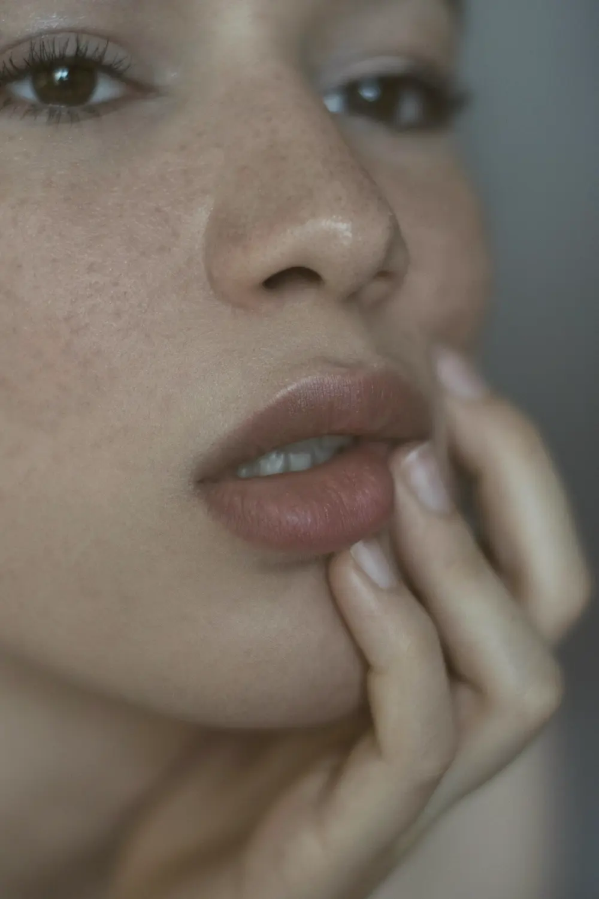

Tudo o que o IHFC faz, explicado com calma.
Aqui você conhece cada tratamento e quem cuida dele. A escolha certa vem da avaliação: às vezes o melhor caminho é um procedimento só, às vezes nenhum.
Cirurgia bucomaxilofacial
O cirurgião bucomaxilofacial cuida dos ossos, dos dentes e dos tecidos da boca e da face. É a formação que trata dente do siso, fraturas do rosto, a articulação da mandíbula e lesões da boca.

Dente do siso e inclusos
Retirada de terceiros molares e de dentes que não nasceram (inclusos e semi-inclusos), com planejamento por imagem e técnica para menos desconforto no pós.
Implantes e enxertos
Implantes dentários, enxerto ósseo e levantamento de seio maxilar quando falta osso, com guia cirúrgico quando indicado e prótese sobre implante.
Trauma de face e ATM
Fraturas dos dentes e do osso que os sustenta, reimplante de dente que saiu com o trauma e tratamento da luxação da articulação da mandíbula.
Lesões da boca e biópsias
Investigação de feridas, caroços e manchas na boca, no lábio, na língua ou nas glândulas salivares. Cistos e tumores benignos são removidos e enviados para análise.
Comunicações buco-sinusais
Fechamento de fístulas entre a boca e o seio maxilar ou o nariz, que podem surgir depois de uma extração.
Pequenas cirurgias da boca
Frenectomia (freio da língua ou do lábio), toro mandibular e palatino, bridas, aumento de vestíbulo e tracionamento de dente para a ortodontia.
Bruxismo
Ranger e apertar os dentes desgastam e doem. O tratamento combina placa miorrelaxante e, quando indicado, toxina botulínica no masseter.
Cirurgia ortognática
Corrige a posição da maxila e da mandíbula quando a mordida e o perfil não se encaixam. Planejamento em conjunto com o ortodontista.
Cirurgias do rosto e do pescoço
Feitas com anestesia local, na maioria das vezes, e sempre depois de uma consulta cirúrgica com exames, monitorização e teste alérgico. Cada causa pede uma técnica, por isso a avaliação vem primeiro.

Lipo de papada
Retira a gordura sob o queixo por microincisões. Indicada quando a papada é de gordura, e não só de pele.
Platismoplastia
Corrige as bandas do músculo do pescoço (platisma), que formam “cordas” e deixam o contorno pesado.
Cervicoplastia
Trata o excesso de pele do pescoço. Pode ser combinada à lipo de papada e à platismoplastia no mesmo tempo.
Bichectomia
Remove parte das bolsas de gordura das bochechas, por dentro da boca. Bem indicada em rostos arredondados; em rostos finos, a avaliação pode desaconselhar.
Lip lift
Encurta a distância entre o nariz e o lábio e devolve a curva do lábio superior, com a cicatriz escondida na base do nariz.
Mentoplastia
Projeção do queixo com prótese, para equilibrar o perfil. Em alguns casos o ácido hialurônico resolve sem cirurgia.
Enxerto de gordura
Usa a sua própria gordura para repor volume no rosto e no pescoço.
Revisão de cicatriz e queloide
Melhora de cicatrizes antigas, com cirurgia, laser ou infiltração, conforme o tipo.
Toda cirurgia começa com uma consulta cirúrgica de cerca de 20 minutos (histórico, medicações, alergias e exames). Veja como funciona em Segurança em cada etapa.
Harmonização facial
Começamos com quantidades pequenas, observamos a resposta e reavaliamos. A ideia é você parecer descansada e você mesma.

Toxina botulínica
Suaviza as linhas de expressão da testa, da glabela e dos olhos sem tirar a expressão. Também trata bruxismo e suor excessivo nas mãos e nas axilas.
Ácido hialurônico
Volume, contorno e hidratação: olheiras, lábios, malar, mandíbula e queixo. É reversível, e também fazemos a remoção de preenchimentos antigos.
Bioestimuladores de colágeno
Ácido poli-L-láctico e hidroxiapatita de cálcio estimulam o seu próprio colágeno. A firmeza aparece aos poucos, ao longo de meses.
PRP e Plasma Gel
Derivados do seu próprio sangue, preparados na clínica, para estimular a pele ou repor volume com material do seu corpo.
Fios de sustentação
Fios absorvíveis (PDO e PCL) reposicionam os tecidos e estimulam colágeno no rosto e no pescoço, sem corte.
Rinomodelação
Ajusta o perfil do nariz com ácido hialurônico ou fios, sem cirurgia. Há também a otomodelação com fios, para as orelhas.
Lábios
Contorno, volume e hidratação na medida certa, respeitando o desenho do seu sorriso.
Skinbooster
Hidratação profunda que devolve o viço da pele do rosto, do pescoço e das mãos.
Endolaser facial
Uma fibra de laser trata a flacidez e a gordura localizada do rosto e do pescoço por dentro, sem cortes.
Visagismo e simetria
Planejamento do rosto inteiro, por etapas, para equilibrar proporções em vez de tratar um ponto isolado.
Pele e tecnologias
Manchas, melasma, acne, textura e firmeza. O recurso certo depende do seu tipo de pele e da causa: ter o equipamento não significa que ele seja indicado para todos.

Revitalli
Protocolo próprio do IHFC para melasma, manchas, cicatrizes de acne e rejuvenescimento, com acompanhamento e cuidados em casa.
Peelings
Do suave ao profundo (retinoico, químico, de diamante), para renovar a pele, clarear manchas e tratar acne.
Limpeza de pele
Remove impurezas e cravos e prepara a pele para os outros tratamentos.
Microagulhamento
Microcanais que estimulam colágeno, melhoram cicatrizes e a textura da pele.
Ultrassom microfocado
Energia que chega à camada de sustentação da pele e trata a flacidez do rosto e do pescoço sem cortes.
Radiofrequência e laser
Firmeza e textura do rosto e do corpo, com sessões programadas conforme a avaliação.
Lesões de pele
Remoção de sinais, verrugas, xantelasma, milium e outras lesões benignas, com avaliação médica.
Estrias e clareamento
Protocolos para estrias e para o escurecimento de axilas e virilha.
Contorno, firmeza e saúde
Gordura, flacidez ou diástase: cada queixa tem o seu caminho, do tratamento sem cortes ao procedimento médico, sempre com avaliação.

Gordura localizada
Enzimas, criolipólise, Endolaser corporal, hidrolipo e ultracavitação para abdômen, flancos, culotes, braços e costas.
Bumbum e celulite
Subcisão de celulite, bioestimuladores e protocolos de firmeza e contorno glúteo.
Vasinhos
Escleroterapia (PEIM) para os microvasos das pernas, com avaliação antes.
Emagrecimento acompanhado
Plano com médica e nutricionista, bioimpedância e exames. A medicação, quando necessária, só com prescrição e acompanhamento.
Suor excessivo
Toxina botulínica para hiperidrose nas axilas e nas mãos.
Seios e peitoral
Firmeza e contorno sem cortes, para mulheres e homens, conforme a avaliação.
Queda de cabelo tem causa
A tricologia investiga o porquê da queda (hormônios, vitaminas, couro cabeludo) antes de tratar.

Tricologia
Consulta médica para entender a queda e montar o tratamento.
PRP e microagulhamento capilar
Estimulam os fios a partir do couro cabeludo, em sessões.
Laser e LED capilar
Protocolos de apoio para fortalecer o fio.
Implante capilar
Para áreas sem fio, com avaliação da área doadora.
Odontologia completa
Da limpeza ao implante, para adultos e crianças, com o sorriso planejado junto com o rosto.

Clareamento
No consultório ou em casa, com moldeira e acompanhamento.
Lentes e facetas
Em resina ou cerâmica, e fechamento de espaços entre os dentes.
Alinhadores e aparelhos
Ortodontia para alinhar os dentes e a mordida.
Gengivas
Correção do sorriso gengival (gengivoplastia e aumento de coroa).
Tratamentos do dia a dia
Limpeza, restaurações e tratamento de canal.
Próteses e protocolo
Fixas, removíveis, totais e protocolo sobre implante.
Odontopediatria
Atendimento para crianças, com calma e no tempo delas.
O cuidado que completa o tratamento
Recuperar bem faz parte do resultado. Fisioterapia, nutrição e terapias acompanham você antes e depois.

Fisioterapia
Drenagem pós-operatória, corporal e facial, taping, liberação miofascial, ventosaterapia e laserterapia.
Nutrição
Plano alimentar com bioimpedância, também para preparar e recuperar de cirurgias.
Massoterapia
Massagem relaxante e com ventosas.
Podologia
Unha encravada, fungos, calos, órteses e spa dos pés.
Feridas
Ferida que não cicatriza tem tratamento especializado, com curativos e acompanhamento.
Beleza
Micropigmentação de sobrancelhas e lábios e lash lifting.
Conteúdo informativo, que não substitui a avaliação presencial. A indicação, o número de sessões e o resultado variam de pessoa para pessoa. Imagens ilustrativas.